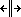

CKEditor supports creating and editing tables, including more advanced table manipulation features such as inserting or deleting cells, rows and columns, merging and splitting cells, or adjusting various table properties such as text and background color, vertical and horizontal alignment, border colors and widths, cell spacing and padding and so on. These are all available from the table context menu.
These features are provided by the Table, Table Tools and Table Selection (CKEditor 4.7+) plugins which by default are available in the Standard and Full installation packages.
Starting from CKEditor 4.7 you can now use the unique custom selection system for tables to, for example:
Additionally, you can also add an optional Color Dialog plugin which provides a user-friendly way to select the cell background and border color through a dedicated dialog window.
An optional Table Resize plugin adds support for column resizing with your mouse. Hover your mouse over the column border to see the cursor change to  to indicate that the column can be resized. Click and drag your mouse to set the desired column width.
Refer to the Table Support with Column Resizing article to learn more about this feature.